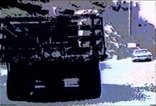

|
ASCUAS
|




Categoría: Video-arte experimental
Fecha: 29-02-1984 -- 10-03-1984
Director y Guión: Veno de Laíra (Benno Richard Mauler Lair) (Munich, Alemania)
Producción: Emilio Mendoza, M. A. United
Música: Etnocidio de Emilio Mendoza, ejecutada por la ODILA
Duración: 43' 47"
Locaciones: Venezuela
- I Festival Internacional de Cinema, TV e Video do Rio de Janeiro, Brasil, 19, 24/11/1984.
ASCUAS es la primera
variación de los tres videos que fueron realizados en
conjunción creativa del artista
audiovisual alemán Benno Richard Mauler
Lair con el compositor
Emilio Mendoza en los ochenta, en
Caracas, Venezuela.
(Código ZKM: 2008000366_0000_laira_veno_ascuas_NTSC_Umatic.mov)
(Código ZKM: 2008000366_0000_laira_veno_ascuas_NTSC_Umatic.mov)